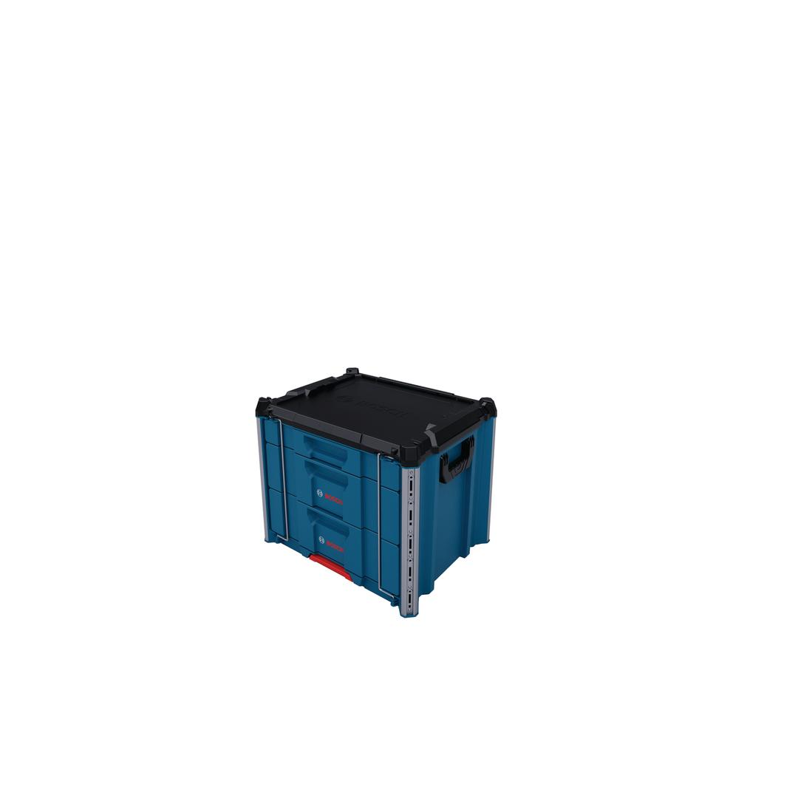
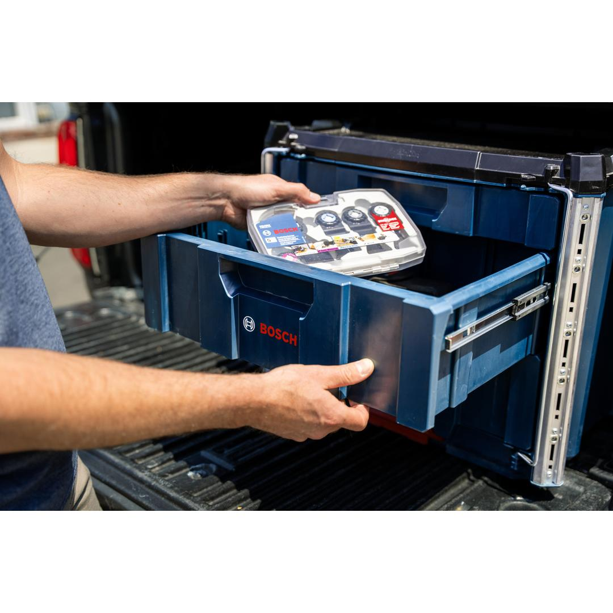
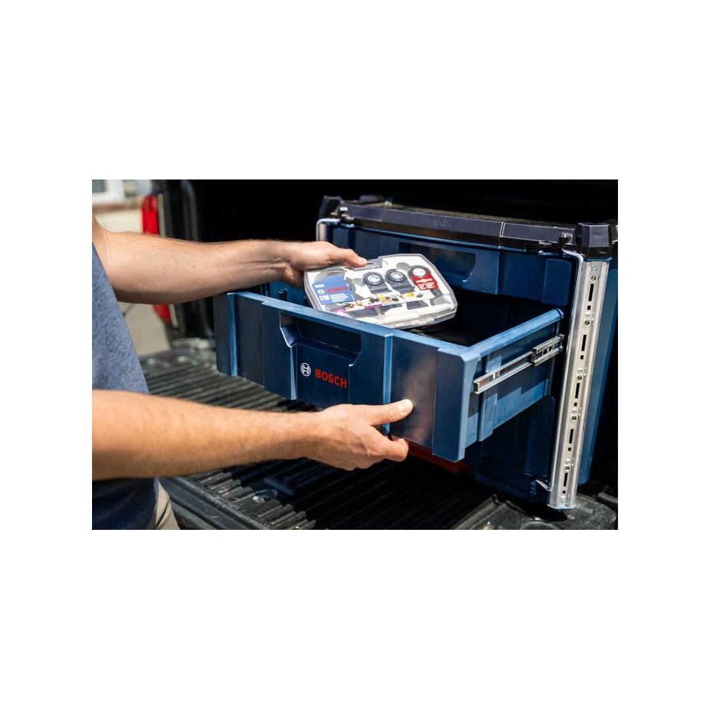
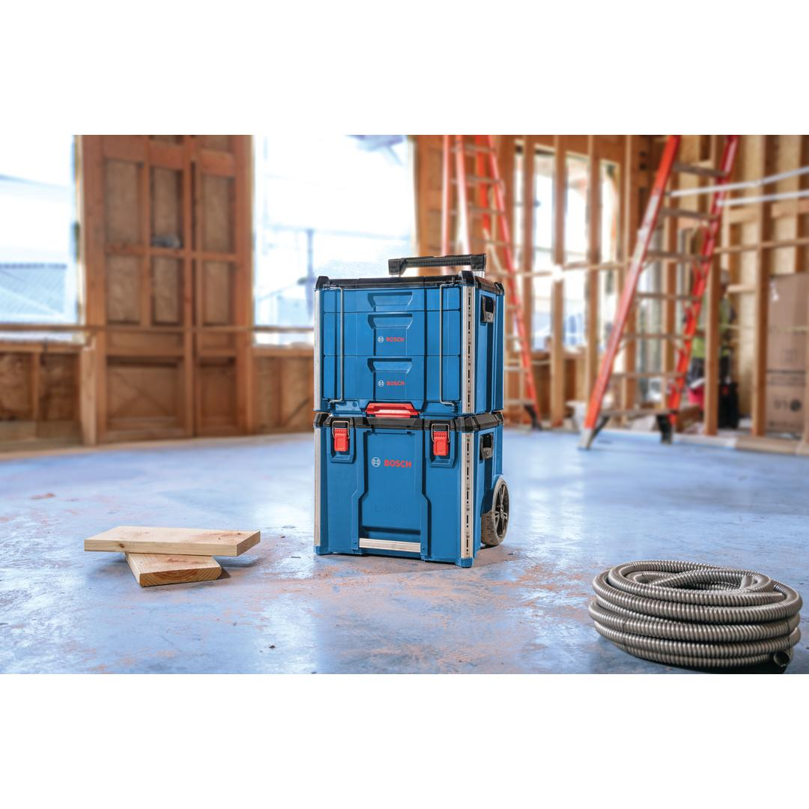
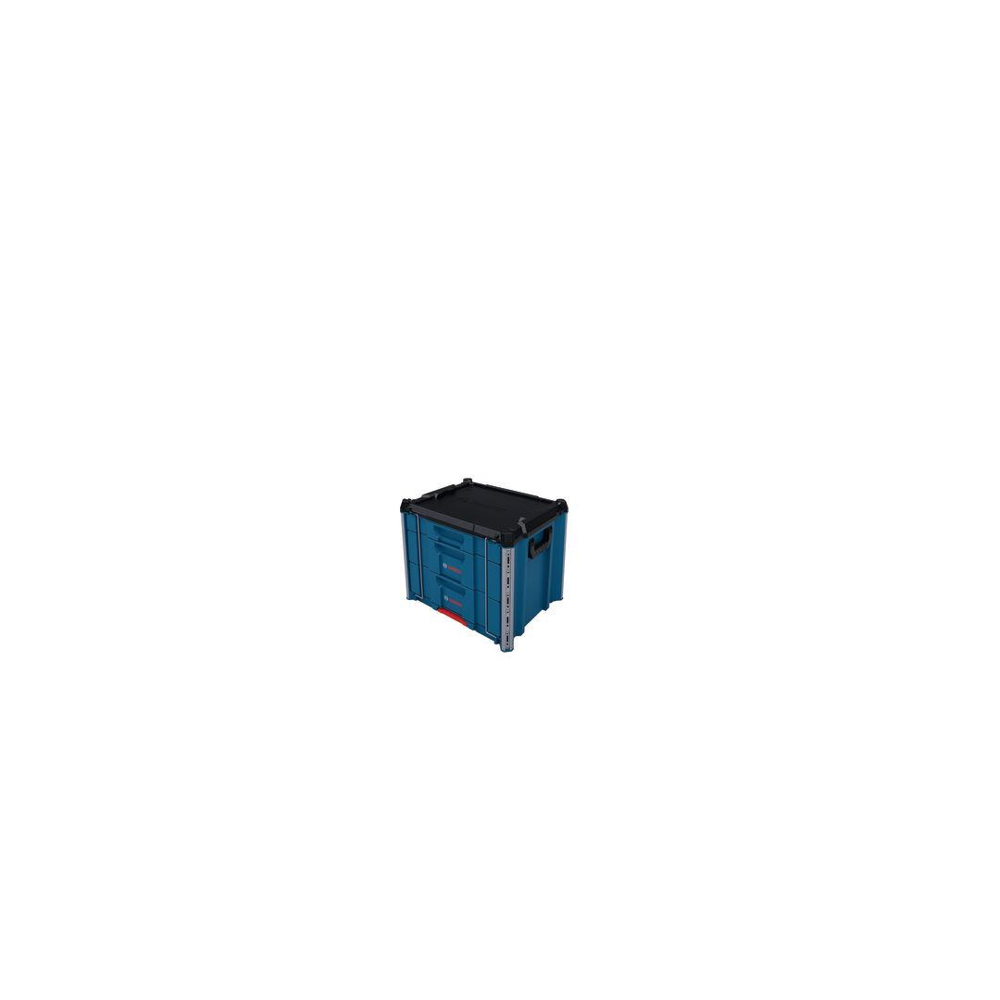

1600A037E3





| Total weight capacity |
50 kg |
| Pad-lock compatibility |
Yes |
| Metal reinforced edges |
Yes |
| Side handles |
Yes |
| Drawer |
3 drawers |
| L-Boxx compatibility |
Yes |
| Material |
PP |
Tough, stackable and fully modular storage solution for smaller items
The L-BOXX Contractor System is the go-to mobile tool storage solution that combines durability and versatility. Its interlocking modular design allows seamless connection with all other L-BOXX Contractor System products. The L-BOXX Drawer 3 provides efficient, customizable storage for easy transport and organization of tools and accessories. It consists of 1 low and 2 high drawers for better organization of smaller items, hand tools, and more. Like most L-BOXX Contractor cases, it can be stacked on top of or below any other component of the L-BOXX Contractor assortment. The Drawer 3 has an impact-resistant body and metal-reinforced corners for tough jobsites. Designed for your convenience, the L-BOXX Drawer 3 has two side handles for easy carrying.
The L-BOXX Contractor Drawer 3 has integrated aluminum rails for attaching ProClick products. All L-BOXX Contractor products are backward compatible with standard L-BOXXes.